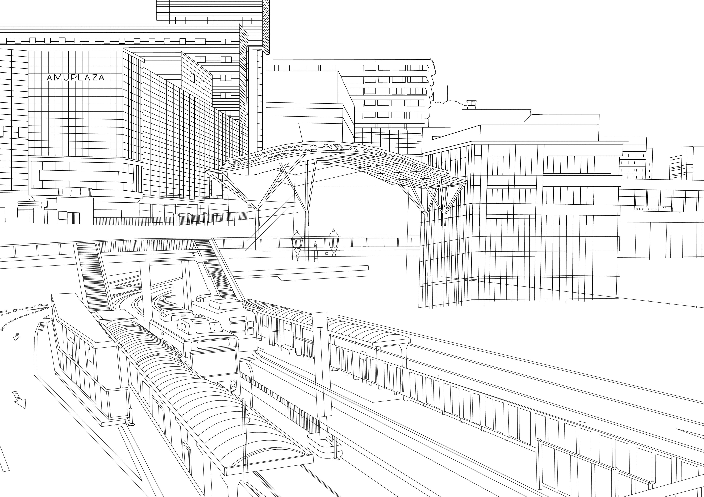

デジタル
諫早市展 奨励賞受賞
長崎駅
制作期間
約1ヶ月
作品について
長崎駅周辺が変わってアミュプラザ新館が開業する前に制作した作品で、新しい長崎駅周辺をテーマに描きました。
使用ツール
アイビスペイント
制作の流れ

ラフ工程
当時は駅前のかもめ広場などがまだ建設途中で、長崎駅周辺の完成形が完全には分からない状態でした。
そのため、何度も実際に長崎駅へ行って撮影した資料写真を組み合わせ、完成後の姿を想像しながら、長崎駅全体が写るような構図を工夫して描きました。
デジタル
諫早市展 奨励賞受賞
約1ヶ月
長崎駅周辺が変わってアミュプラザ新館が開業する前に制作した作品で、新しい長崎駅周辺をテーマに描きました。
アイビスペイント

当時は駅前のかもめ広場などがまだ建設途中で、長崎駅周辺の完成形が完全には分からない状態でした。
そのため、何度も実際に長崎駅へ行って撮影した資料写真を組み合わせ、完成後の姿を想像しながら、長崎駅全体が写るような構図を工夫して描きました。